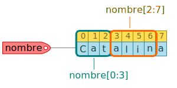

3. Cadenas de caracteres¶
Las cadenas de caracteres (denominadas habitualmente y de manera indistinta como strings) es un tipo de dato que contiene una secuencia de símbolos, mismos que pueden ser alfanúmericos o cualquier otro símbolo propio de un sistema de escritura. En Python los strings se definen utilizando comillas dobles o simples. Observa los siguientes ejemplos:
nombre = "Catalina"
type(nombre)
str
apellido = 'Lara'
type(apellido)
str
Observa que es indistinto utilizar las comillas dobles o simples al momento de crear una cadena de caracteres. Si se requiere crear una cadena de caracteres multilínea, entonces se pueden definir utilizando un tres comillas dobles, tal como se muestra en el siguiente ejemplo:
en_paz = """
Muy cerca de mi ocaso, yo te bendigo, vida,
porque nunca me diste ni esperanza fallida,
ni trabajos injustos, ni pena inmerecida;
"""
type(en_paz)
str
La longitud o cantidad de elementos de una cadena se puede determinar utilizando la función len:
palabra = "Hola"
len(palabra)
4
3.1. Concatenación de cadenas¶
Para concatenar (unir) cadenas se puede utilizar el operador +. Observa el siguiente ejemplo en el cual se concatenan las cadenas "hola" y "mundo".
"Hola" + "mundo"
'Holamundo'
Notarás que Python por sí mismo no sabe que estamos uniendo dos palabras y que entre ellas debería haber un espacio para su correcta lectura, evidentemente este tipo de cuestiones son las que el programador debe tomar en cuenta al escribir un código. Si quisiéramos introducir un espacio entre las dos palabras podríamos añadirlo de forma manual en alguna de las cadenas, o como una tercera cadena intermedia, tal como se muestra enseguida:
"Hola" + " mundo"
'Hola mundo'
"Hola" + " " + "mundo"
'Hola mundo'
Otra manera de concatenar cadenas es utilizar el método join. Este método nos sirve para unir una lista de cadenas mediante un separador, por ejemplo:
primer_nombre = "Ana"
segundo_nombre = "Isabel"
separador = " "
separador.join( [primer_nombre, segundo_nombre] )
'Ana Isabel'
separador = "---"
separador.join( [primer_nombre, segundo_nombre] )
'Ana---Isabel'
La cantidad de cadenas a unir pueden ser más dos, observa el siguiente ejemplo:
", ".join(["Ana", "Jorge", "David", "José", "Juan"])
'Ana, Jorge, David, José, Juan'
Naturalmente, el separador puede ser cualquier caracter válido, incluyendo algunos poco usuales:
" \U0001F970 ".join(["Ana", "Jorge", "David", "José", "Juan"])
'Ana ü•∞ Jorge ü•∞ David ü•∞ Jos√© ü•∞ Juan'
3.2. Indexación y slicing¶
Las cadenas de caracteres son secuencias de elementos, donde cada elemento corresponde a un caracter específico. Cada elemento de la cadena tiene asociado un índice, el cual corresponde a la posición en que se encuentran, y por lo tanto serán enteros positivos. La numeración de los índices comienza en cero. En la figura se muestra una cadena de caracteres guardada en la variable nombre, podemos observar que a cada caracter le corresponde un índice. Por ejemplo, a la letra C le corresponde el índice 0, a la letra t el índice 2.
Se puede acceder a cada una de los símbolos que componen una cadena mediante la notación cadena[idx], donde cadena es el nombre de la cadena e idx el índice en que se encuentra el caracter al cual se desea acceder, siendo 0 para la primera letra, 1 para la segunda y así de manera consecutiva. Veamos el ejemplo descrito en la figura, primero creamos la cadena nombre:
nombre = "Catalina"
Si quisiéramos acceder a la letra C tendríamos que utilizar el índice 0, es decir:
nombre[0]
'C'
Para acceder a la letra t utilizaríamos el índice 2:
nombre[2]
't'
En las secuencias se pueden utilizar también índices negativos para acceder a los elementos. En este caso, el último elemento siempre tendrá asociado el índice -1 y a partir de ahí hacia la izquierda el índice de cada elemento adyacente disminuye una unidad, es decir, \(-1, -2, -3, -4, ..., -n\), donde \(n\) es el número de elementos de la secuencia. En la siguiente figura podemos observar los índices negativos asociados a cada elemento de la cadena almacenada en la variable nombre.
Así, si quisiéramos acceder al último elemento de dicha cadena, podríamos hacerlo utilizando el índice -1:
nombre[-1]
'a'
Es importante tener en cuenta que una cadena de caracteres no sólo está compuesta de símbolos alfanuméricos, sino también signos de puntuación o espacios en blanco o saltos de línea, etc. Vamos a crear una variable llamada frase, en la cual guardamos una cadena compuesta por dos palabras, separadas por un espacio.
frase = "Hola. Adiós."
Si accedemos al elemento en el índice 4, podemos observar que este corresponde al punto:
frase[4]
'.'
Ahora, si accedemos al elemento en el índice 5, veremos que el elemento correspondiente es el espacio:
frase[5]
' '
Ahora vamos a revisar una manera de acceder a una porción de una secuencia, no a un sólo elemento como lo hacemos con la indexación. Habitualmente se denomina slicing a este tipo de operación. Con la sintaxis cadena[a:b] podemos acceder al conjunto de caracteres comprendidos entre los índices a y b-1.
Observa la siguiente línea, la cual nos permite tomar los elementos con índices 0 y 1:
nombre[0:3] # Elementos 0, 1 y 2
'Cat'
Esta otra línea nos permite acceder a los elementos con índices 2, 3, 4, 5 y 6:
nombre[3:7] # elementos 3, 4, 5 y 6
'alin'
Cómo ya habrás notado la cuestión es simple e intuitiva, sólo debemos tener cuidado con la notación y recordar que no se incluye el elemento dado por el índice superior, sino hasta el correspondiente al índice inmediatamente anterior a este. En la siguiente figura puedes observar una representación gráfica de las dos operaciones de slicing anteriores.

Cuando se prescinde de uno de los índices en la notación de slicing, se asume que se toman todos los valores desde el inicio hasta el índice indicado menos uno; o bien desde el índice establecido hasta el final de la cadena; esto dependende, obviamente, del índice del cual se prescinda.
Por ejemplo, la siguiente línea toma los elementos desde el inicio de la cadena hasta el índice 4-1:
nombre[:4]
'Cata'
Esta otra línea toma los elementos desde el índice 4 hasta el final de la cadena.
nombre[4:]
'lina'
La siguiente imagen muestra una representación gráfica de lo descrito anteriormente.
De una cadena de caracteres también pueden obtenerse un conjunto de elementos sin tomarlos de uno en uno, sino cada dos, cada tres, etc. Si utilizamos la notación cadena[a:b:n], nos devolverá el conjunto de elementos comprendidos entre los índices a y b-1, tomados cada n elementos. Observa el siguiente ejemplo:
nombre = "Agustín"
nombre[0:4:2]
'Au'
La línea anterior nos devuelve los elementos ubicados en los índices \(0, 1, 2 \, y \, 3\), pero de estos únicamente los toma a cada dos elementos, es decir:
Comenzamos tomando el elemento de índice \(0\) (letra
A),Ignoramos el elemento de índice \(1\) (letra
g)Tomamos el elemento de índice \(2\) (letra
u)Ignoramos el elemento de índice \(3\) (letra
s)
En este punto se han agotado todos los elementos comprendidos entre los límites indicados, podemos observar que los únicos elementos tomados y devueltos por la instrucción nombre[0:4:2] son la letra A y u, tal como se mostraba en la línea anterior. En la siguiente figura se muestra un esquema gráfico de esta operación.
Veamos ahora otro ejemplo con la misma cadena:
nombre[3:7:3]
'sn'
Observa que en este caso tomamos los elementos ubicados en los índices \(3, 4, 5 \, y \, 6\), pero tomados cada tres elementos, es decir:
Tomamos el elemento ubicado en el índice
3(letras)Ignoramos el elemento ubicado en el índice
4(letrat)Ignoramos el elemento ubicado en el índice
5(letraí)Tomamos el elemento ubicado en el índice
6(letran)
Una representación gráfica de esta operación la puedes observar en la siguiente figura.
Si quisiéramos tomar todos los elementos de una cadena a cada dos, podríamos hacer lo siguiente:
nombre[::2]
'Autn'
Una manera muy sencilla de invertir el orden de los elementos en una cadena de texto es utilizando esta notación de slicing, pero utilizando un valor negativo. Observa lo siguiente:
nombre[::-1]
'nítsugA'
Puedes notar rápidamente que se toman todos los elementos de la cadena, pero comenzando desde el final con un paso negativo. Lo mismo se podría hacer pero tomando a cada dos elementos, de la siguiente manera:
nombre[::-2]
'ntuA'
3.3. Mayúsculas y minúsculas¶
Cuando se trabaja con texto en ocasiones puede ser necesario hacer modificaciones en lo que corresponde a la presencia de mayúsculas y minúsculas. Podríamos por ejemplo tener de entrada un texto completamente en mayúsculas y convertirlo en minúsculas, o el caso contrario. En Python las cadenas de caracteres disponen de los métodos upper y lower que nos permiten convertir en mayúsculas y minúsculas, de manera respectiva, todas las letras que conforman una cadena de texto.
Vamos a definir una variable frase en la cual guardaremos la siguiente cadena:
frase = "Hola mundo"
Si quisiéramos convertir toda la cadena en mayúsculas utilizamos el método upper:
frase.upper()
'HOLA MUNDO'
Si por el contrario quisiéramos que todas las letras fueran minúsculas utilizamos el método lower:
frase.lower()
'hola mundo'
Debes tener cuidado y considerar que al momento de utilizar los métodos upper y lower, estos no modifican a la cadena de caracteres almacenada en frase, sino que devuelven una nueva cadena con las modificaciones realizadas. Esto se debe a que las cadenas en Python son objetos inmutables y una vez creadas no pueden modificarse. Observa que si en este punto imprimimos la variable frase tendríamos exactamente la misma cadena (sin modificar) definida inicialmente:
print(frase)
Hola mundo
Otro método que puede resultarte de utilidad es capitalize, el cual te permite colocar la primera letra en mayúsculas y todas las demás en minúsculas, como habitualmente ocurre con una oración. Observa el ejemplo siguiente:
texto = "mi perro es color bermejo"
texto.capitalize()
'Mi perro es color bermejo'